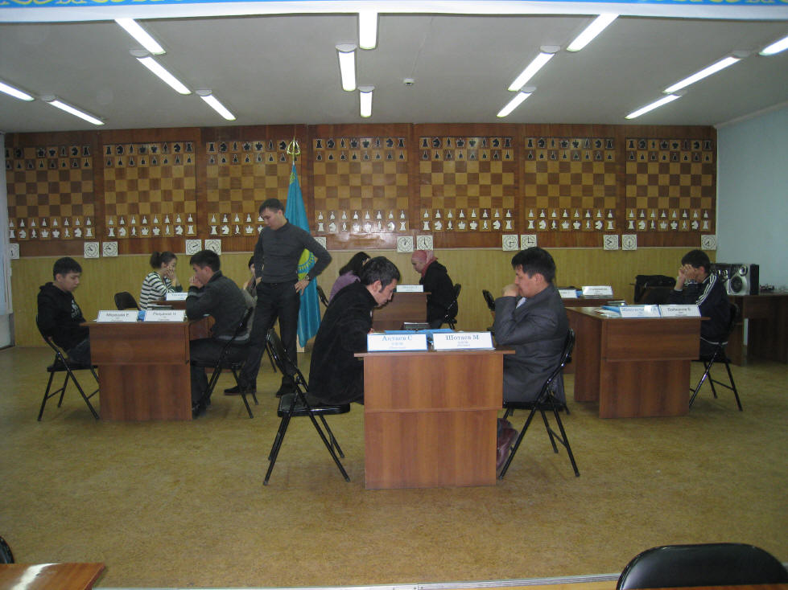
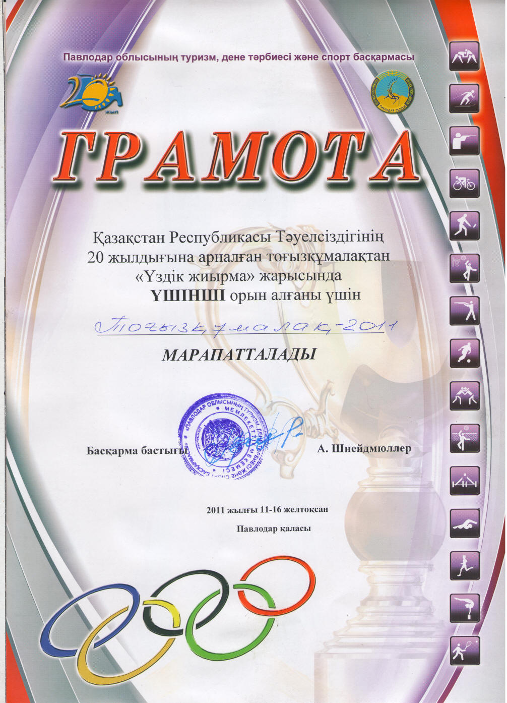

Лучшая двадцатка
С 12 по 15 декабря в павлодарском Доме Шахмат прошел традиционный ежегодный турнир "Лучшая двадцатка", посвященный 20-летию Независимости Республики Казахстан, с участием сильнейших мастеров игры тогызкумалак. Особенностью данного турнира стало участие в нем программы "Тогызкумалак 2011" (впервые на официальном уровне). Дебют для компьютерной программы вышел удачным: она заняла третье место, победив трех мастеров спорта (С.Кусаинову, А.Такишеву и Г.Магауову) и уступив в двух встречах (упустив выигрыш с мастером спорта Р.Райымбековой и проиграв мастеру спорта международного класса Д.Кениной).
Перед началом соревнования высказывались сомнения в способности программы одержать хотя бы одну победу над квалифицированным игроком, но последующие результаты опровергли эти сомнения.
Многих удивила сила игры программы, особенно в самой сложной части игры - атсырау.
"Тогызкумалак 2011" была заявлена в женскую половину "Лучшей двадцатки", где не хватало одной участницы. Состав участниц был представительным: все квалифицированные и титулованные игроки (включая Диану Кенину - действующую чемпионку Азии и чемпионку Казахстана 2010-го года).
Я выполнял функции оператора и, хотя непосредственно не думал над партией, за эти несколько дней устал от нервного напряжения, словно сам участвовал в турнире. Оно и неудивительно, ведь я переживал за результаты своего детища.

Игры с участием программы происходили следующим образом: соперник (или точнее, соперница) делала ход, я передавал этот ход машине, дожидался ответа программы (запущенной на ноутбуке), а затем воспроизводил ее ход на доске. Подробнее о турнире (с примерами партий) в следующих записях блога.
Несмотря на неплохой результат, показанный программой (3 очка из 5 возможных, а могло бы быть и 4 из 5), я как ее разработчик не обольщаюсь, поскольку прекрасно понимаю, что программа еще очень далека от совершенства, ее игра далека от идеала, определенные позиции она понимает очень плохо (что и было продемонстрированно в 5-м туре в партии с Дианой). Могу сказать, что несмотря на простоту правил, тогызкумалак оказался крепким орешком в наше компьютерное время. До сегодняшнего дня в мире еще не существовало программы, способной переиграть мастера спорта.
По богатству комбинаций, по неисчерпаемости игры, по глубине замыслов тогызкумалак сравним с шахматами.
В "Тогызкумалак 2011" было вложено много труда, времени и усилий, программа постоянно тестировалась, дорабатывалась, и в конце концов старания были вознаграждены.
На закрытии турнира я выразил благодарность Дастану Исатаевичу Капаеву за то, что он включил программу в "Лучшую двадцатку", а также Серику Актаеву и Диане Кениной (которые, как и я, являются создателями проекта) за их консультации и постоянную помощь. Они - настоящие энтузиасты игры и неслучайно стали мастерами спорта международного класса.
Можно с уверенностью сказать, что в истории игры тогызкумалак открыта новая страница. Главный итог турнира заключается в том, что уже существует электронный соперник, способный соперничать на равных с сильнейшими игроками и даже побеждать их. В истории этой древней и мудрой игры начинается новая эра - компьютерная.

Все материалы сайта можно использовать только с разрешения автора (Е. Шамбаева). При перепечатке активная ссылка на данный сайт обязательна.